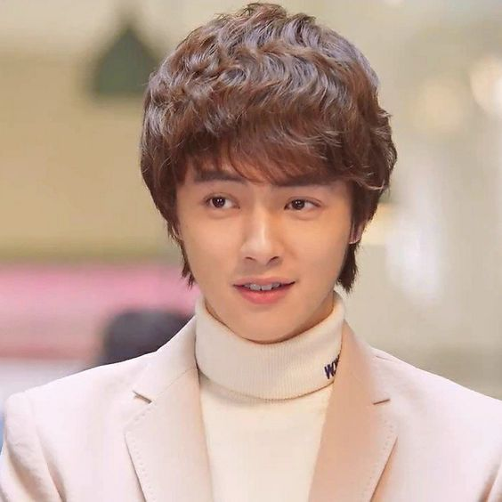
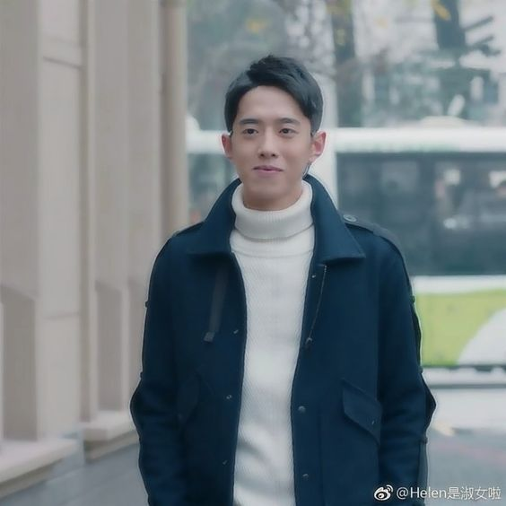
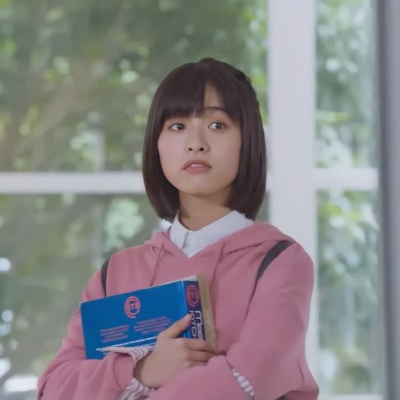

| Picture |
Name |
Info |
|

|
Darren Chen as Huaze Lei
| F4's talented and quiet member. Huaze Lei, unlike the other three members of F4, is a senior at Ming De University's Department of Music. Huaze Lei, who comes from a wealthy family, has known Daoming Si since they were children. |
|
|
Dylan Wang as Dao Ming Si
| F4's obstinate, hot-headed, and arrogant leader. Daoming Si is a senior in the Department of Business Management at Ming De University. He is the heir to a wealthy and powerful family, and he is being groomed to take over the family's multinational corporation, Daoming Group. |
|
|
Caesar Wu as Xi Men
| F4's playboy member. Ximen is a senior in the Department of Business Management at Ming De University and a tea culture expert. Due to the scars of his parents' failed relationship, his father's infidelity, and an unresolved past with his first love, he is also a charming and prolific playboy. |
|

|
Leon Leong as Feng Mei Zuo
| The F4 member who sets the tone. Meizuo is a senior in the Department of Business Management at Ming De University. He has a great sense of humor, enjoys making jokes, and has an incredible memory. He, like Ximen, is a seductive casanova. |
|

|
Shen Yue as Dong Shan Cai
| A first-year student in Ming De University's Department of Food Science and Nutrition. She also works part-time with her best friend, Xiaoyou, at a bubble tea shop. Shancai is a strong-willed, compassionate, and courageous young lady who will not allow herself or others to be bullied. |